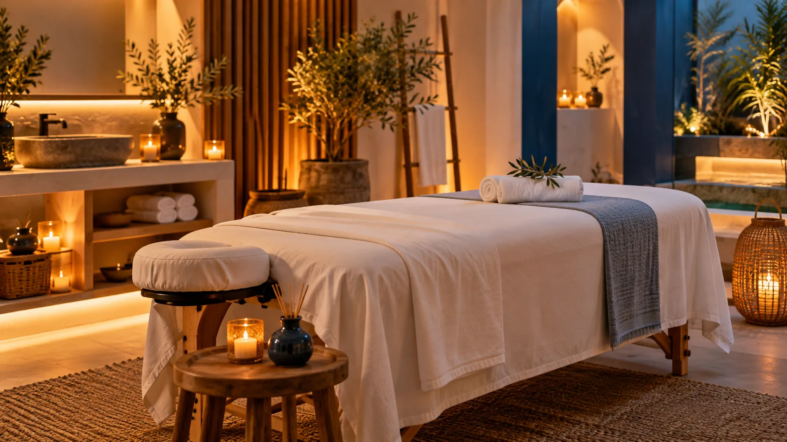
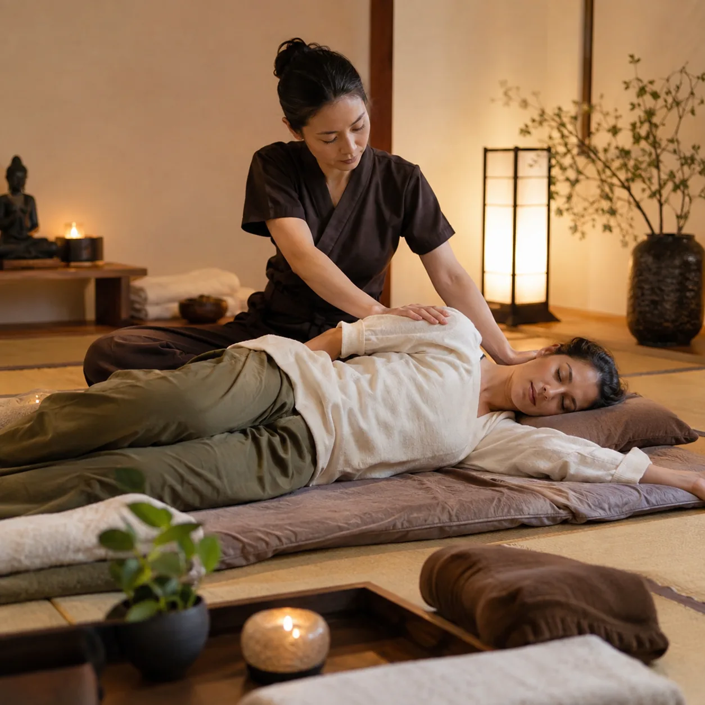
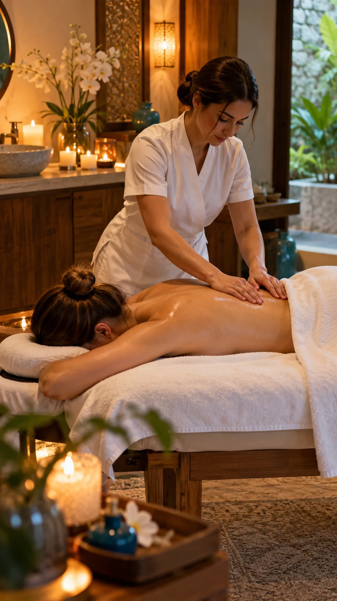
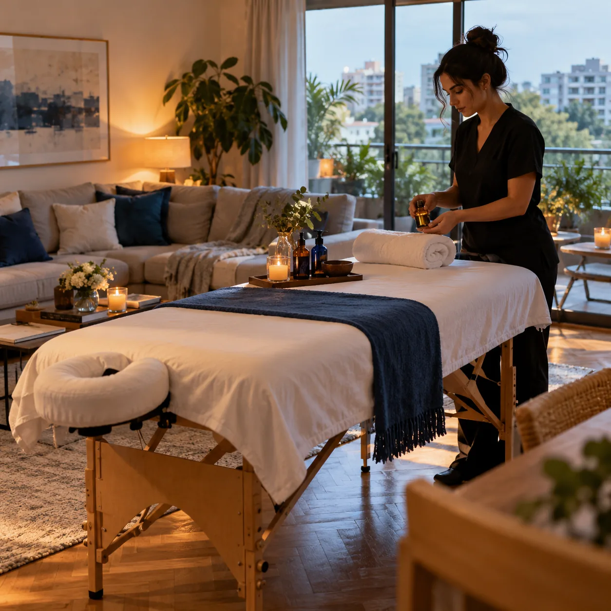

Descontracturante
Presión firme y sostenida sobre los puntos cargados, con el ritmo que cada zona pide. Para cuando la semana se te quedó en los hombros.
Consultar este masajeLunes a sábados · 11 a 21 h
Descontracturantes, relajantes y sensitivos. Atendemos en Martínez y vamos a domicilio en Zona Norte y CABA. Escribinos y coordinamos tu sesión.

Contanos qué te pasa y te decimos cuál conviene. Todos pueden ser en Martínez o a domicilio.
Presión firme y sostenida sobre los puntos cargados, con el ritmo que cada zona pide. Para cuando la semana se te quedó en los hombros.
Consultar este masajeManiobras largas y envolventes, aceite tibio y luz baja. Para bajar revoluciones, dormir mejor y volver a sentir el cuerpo entero.
Consultar este masaje
Un recorrido lento por todo el cuerpo, con contacto suave y atención a lo que vas sintiendo. Sin apuro, en un clima íntimo y respetuoso.
Consultar este masaje

Las dos viajan con nosotros. Elegí según el masaje, o dejá que te recomendemos.
Altura regulable, apoyacabezas y sábanas limpias en cada sesión. Es la base para los masajes de presión y para trabajar zonas puntuales con precisión.
Ideal para descontracturantes.
Sobre colchoneta a nivel del piso: más superficie de apoyo, maniobras amplias y estiramientos. Se trabaja con ropa cómoda o con aceite, según el masaje.
Ideal para relajantes y sensitivos.
Mismo masaje, mismas manos. Cambia solo dónde te esperamos.
Un espacio tranquilo con todo listo cuando llegás: camilla o tatami preparados, música y luz baja. La dirección exacta te la pasamos al confirmar.
Coordinar en MartínezLlevamos camilla o tatami, sábanas, toallas y aceites a tu casa en Zona Norte y CABA. Vos solo hacés lugar.
Consultar por mi zonaUna sesión para soltar la semana: presión justa, luz baja y el tiempo que tu cuerpo pide.
De la primera consulta hasta que te vas más liviano. Sin turnos online ni formularios: todo por WhatsApp.
Contanos qué sentís o qué buscás, qué masaje te interesa y si preferís venir a Martínez o que vayamos a tu casa.
Elegimos juntos día y horario, de lunes a sábados entre las 11 y las 21, y te confirmamos el valor por WhatsApp.
Luz baja, música suave y aceite tibio. Antes de empezar repasamos zonas y presión; durante el masaje, vos marcás el ritmo.
Te quedás unos minutos en calma, tomás agua y seguís el día más liviano. Si querés, te dejamos recomendaciones para la zona trabajada.
Lo que casi todos preguntan la primera vez.
El descontracturante trabaja con presión firme sobre los puntos cargados (cuello, hombros, espalda baja) y puede sentirse intenso por momentos. El relajante usa maniobras largas y suaves para bajar el ritmo: no busca deshacer contracturas sino que te vayas liviano. Si tenés dudas, contanos qué sentís y te decimos cuál conviene.
Las dos opciones están disponibles en Martínez y a domicilio. La camilla es la elección habitual para descontracturantes; el tatami, a nivel del piso, permite maniobras más amplias y estiramientos, y suele elegirse para relajantes y sensitivos.
Solo un espacio despejado de unos 2 × 2 metros donde entre la camilla o el tatami, y un tomacorriente cerca si querés música. Llevamos camilla o tatami, sábanas, toallas y aceites.
Por WhatsApp. No hay turnos online: nos escribís, nos contás qué masaje querés y dónde, y coordinamos día y horario entre lunes y sábados, de 11 a 21.
El valor depende del tipo de masaje, la duración y si es en Martínez o a domicilio. Te lo pasamos por WhatsApp antes de confirmar, sin compromiso.
Zona Norte y CABA. Si estás en el límite de la zona, consultanos igual: lo vemos según el día y el horario.
Escribinos por WhatsApp, contanos qué masaje querés y dónde, y coordinamos el resto. Respondemos dentro del horario de atención.
Consultar por WhatsApp